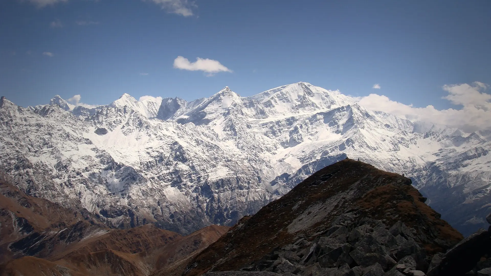

02Day 2 · Tugasi · 2,090 mkm 0.1
Above Joshimath
13–14kmFrom Joshimath · About 45 min by road
A short drive from Joshimath reaches Tugasi. The trail climbs through terraced villages with food stalls and water-powered mills.

Photo: ShwethaSulegai, CC BY-SA 4.0पंगरचुल्ला · Chamoli, Uttarakhand
The trek in one line, and what you can do with it.
Pangarchulla is a hard trek with a real summit: one long day over boulders and snow to the top.
5 stops on the map, then the climb. Scroll the stops and the map follows.
02Day 2 · Tugasi · 2,090 mkm 0.1
13–14kmFrom Joshimath · About 45 min by road
A short drive from Joshimath reaches Tugasi. The trail climbs through terraced villages with food stalls and water-powered mills.
03Day 3 · Khulara · 3,390 mkm 10.9
5kmToday · About 3 h from Guling
From Guling the trail climbs to Khulara, the base camp in a clearing at the top of the forest.
05Day 5 · Mini Pangarchullakm 14.7
3a.m.Started · No water on the way
Summit day starts at 3 a.m. An hour and a half above camp, a tiny temple marks where the trails to Kuari Pass and Pangarchulla split.
05Day 5 · Pangarchulla · 4,590 mkm 17.9
14kmSummit day · 12–14 h, there and back
The aim is to top out by 11 a.m. and say a short prayer at the temple on the summit.
06Day 6 · Tugasikm 32.8
8kmToday · 3–4 h
Down through the forest to Tugasi, then the drive back to Joshimath.
Best in Mar–Apr, Oct–Dec.
Dark: the months the trek’s sources call its best. Mid: possible. See all treks in March.
 Photo: ShwethaSulegai, CC BY-SA 4.0
Photo: ShwethaSulegai, CC BY-SA 4.0
Base prices from 5 operators’ own pages, per person. GST and travel are often extra. Treqz sells nothing.
The practical things, then the questions people ask.
One thing from each part of the packing list, so nothing big is missed. The full list, with where to rent and the daily rates, is on the 3D page.
The full packing list →


Joshimath has the last ATMs, and they can run out of cash. Draw what you need in Rishikesh.
TrekkaroGood signal up to Guling, the first camp, then patchy. You may get some on the summit.
Bikat AdventuresJoshimath is the last charging point. Carry a power bank of 20,000 mAh or more.
Himalayan Dream TreksCarry 2 litres a day. There is no water on summit day, so take an insulated bottle.
TrekkaroAbout 33.0 km of walking over 7 days on the trail.
The highest point is 4,590 m, about 1,970 m above the start.
Its sources grade it Hard.
Mar–Apr, Oct–Dec.
₹11,250 to ₹32,000 per person: base prices from 5 operators' own pages. GST and travel are often extra.
Good signal up to Guling, the first camp, then patchy. You may get some on the summit.
Joshimath has the last ATMs, and they can run out of cash. Draw what you need in Rishikesh.
Padded jacket (−10 °C), Thermal inners ×2 sets, Fleece or woollen layers ×2, Waterproof, windproof jacket, Trek pants ×2, Socks, 4 pairs, Woollen cap and balaclava, Gloves, two pairs. The full list is on the 3D page.
Yes: Dec is among its best months.
Its sources grade it Hard and it takes 7 days on the trail, with a highest point of 4,590 m.
Kuari Pass, Valley of Flowers, Roopkund, Ali–Bedni Bugyal, Brahmatal.


Treks in March · Treks in April · Treks in October · Treks in November · Treks in Uttarakhand · Difficult Treks in Uttarakhand · Winter Treks in India · High-Altitude Treks in India (Above 4,500 m) · 7 Day Treks in India · Treks in Chamoli, Uttarakhand · Pangarchulla vs Brahmatal · Pangarchulla vs Kuari Pass · Pangarchulla vs Valley of Flowers · Pangarchulla vs Roopkund · Free trek finder · All treks in 3D